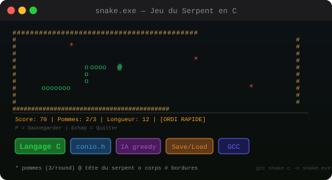
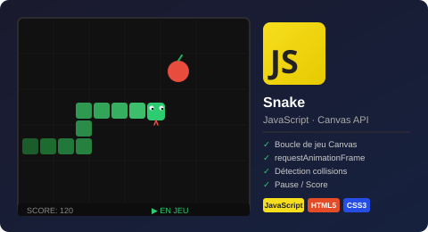

Éducation
- BTS SIO SLAM ITIC Paris
- BTS SIO SLAM IRIS Paris (en cours)
Étudiant développeur web & logiciel
En BTS SIO SLAM à IRIS Paris, je conçois des applications web & logicielles — du back-end au front-end. Projets concrets, stack moderne, autonomie.
Je suis NGUEMA Oscar Kévine , étudiant en BTS SIO option SLAM à IRIS Paris. Je m’oriente vers le développement d’applications web et logicielles, avec un intérêt particulier pour les bases de données et la sécurité. Au cours de ma formation, j’ai réalisé plusieurs projets concrets en PHP, Java et MySQL, en lien avec des besoins métiers.
Projets scolaires, stages et réalisations personnelles

Application web PHP/MySQL de gestion d'auto-école : candidats, moniteurs, véhicules, cours. CRUD complet, sessions sécurisées, architecture MVC et interface responsive.
Acquis : CRUD complet, requêtes SQL paramétrées, architecture MVC PHP, gestion des sessions et sécurité

Application desktop Java de gestion complète d'auto-école : élèves, moniteurs, planning, paiements et exports PDF. Interface graphique Swing avec architecture MVC et connexion JDBC.
Acquis : Architecture MVC en Java, GUI Swing, connexion BDD via JDBC, génération PDF, gestion des rôles

Jeu du serpent en C pur (conio.h) : 3 pommes générées à la fois, croissance après avoir toutes mangées, sauvegarde binaire de partie, mode Ordinateur avec IA greedy et deux vitesses.
Acquis : Programmation procédurale en C, gestion de la mémoire, algorithme IA, sérialisation binaire (save/load), gestion de projet (Trello, Gantt)

Plateforme d'enseignement en ligne développée en équipe avec WordPress et hébergée sur IONOS. Maquettes Figma, gestion de contenu CMS et sécurisation du site.
Acquis : Travail en équipe, maquettage Figma, déploiement sur hébergeur, sécurisation WordPress

Application web PHP/MySQL de gestion scolaire : étudiants, classes, matières, professeurs. Connexion administrateur sécurisée, opérations CRUD complètes, affichage dynamique.
Acquis : CRUD complet, architecture MVC PHP, connexion PDO, organisation vues/contrôleurs, authentification admin
Création et configuration complète d'une boutique e-commerce : catalogue produits, pages collections, intégration du paiement et personnalisation du thème Liquid.
Acquis : Administration e-commerce, langage de templating Liquid, optimisation UX boutique

Recréation du classique jeu Snake avec système de score, accélération progressive et gestion du pause/reset. Rendu graphique via Canvas API.
Acquis : Programmation événementielle, boucle de jeu avec requestAnimationFrame, gestion d'état

Jeu de morpion avec interface moderne et choix de symboles personnalisés (images ou icônes) pour chaque joueur, détection de victoire et aperçu en temps réel.
Acquis : Manipulation du DOM, logique de jeu, gestion d'état, événements utilisateurs

Installation et configuration d'un environnement Linux/Apache/PHP/MySQL complet pour déployer GLPI : gestion des tickets d'assistance IT, inventaire du matériel et administration des utilisateurs.
Acquis : Administration Linux, déploiement LAMP, configuration GLPI, gestion des tickets IT et inventaire parc

Jeu de morpion développé en Java avec interface graphique Swing. Deux joueurs s'affrontent sur une grille 3×3 avec détection automatique de victoire et option de réinitialisation.
Acquis : Programmation orientée objet en Java, interface graphique Swing, gestion des événements et logique de jeu

Application desktop Java de conversion d'unités : températures, distances, poids et devises. Interface graphique Swing intuitive avec conversion en temps réel à la saisie.
Acquis : Conception d'interface Swing, gestion des événements, calculs de conversion, structuration en classes Java

Participation au développement d’une application e-commerce spécialisée dans la vente de vêtements africains, bijoux et accessoires. Contribution au front-end Angular et à l’intégration de services Firebase dans une architecture moderne et modulaire.
Acquis : Architecture Angular avancée, Firebase full-stack, gestion d'état NgRx, déploiement cloud en conditions réelles.

Migration complète d'une application e-commerce Angular 12 vers Angular 21 : montée progressive des versions, adaptation NgRx, modernisation Firebase/AngularFire et validation fonctionnelle.
Acquis : Migration progressive Angular, résolution de conflits npm, adaptation NgRx, passage Firebase compat vers SDK modulaire, documentation technique

Application Angular complète de gestion de Pokémon : liste filtrée en temps réel, fiche détaillée, ajout, édition et suppression. Architecture moderne avec signaux, services et routing.
Acquis : Composants standalone, signaux Angular, services HTTP, routing protégé (guards), directives personnalisées, formulaires réactifs
Langages, outils et méthodes acquis au fil de mes projets — du front-end au back-end
 H
HStructuration sémantique d'applications web (portfolio, auto-école, e-learning) avec prise en compte de l'accessibilité (ARIA) et des bonnes pratiques.
Avancé C
CConception d'interfaces modernes (dark mode, responsive design, animations) et optimisation de l'expérience utilisateur sur différents supports.
Avancé JS
JSDéveloppement de fonctionnalités interactives (jeux Snake et Morpion avec Canvas, logique de jeu, manipulation du DOM) et gestion des interactions dynamiques.
IntermédiaireDéveloppement d'applications web (Pokédex, migration Angular 12 vers 21) avec routing, services, appels API (HttpClient) et structuration en composants.
Intermédiaire WP
WPRéalisation d'un projet en équipe (plateforme e-learning), personnalisation de thème, gestion de contenu et déploiement (IONOS).
Intermédiaire P
PDéveloppement back-end d'applications métier (auto-école, scolarité) avec architecture MVC, gestion des sessions, sécurisation des formulaires et accès aux données via PDO.
IntermédiaireIntégration de solutions cloud : Firebase, Firestore et AngularFire pour la gestion des données et la modernisation d'applications Angular.
Intermédiaire SQL
SQLConception et exploitation de bases de données relationnelles (MCD, schémas), écriture de requêtes SQL (jointures, transactions, requêtes paramétrées).
Intermédiaire C
CProgrammation procédurale en C avec le jeu Snake : boucle de jeu, IA, gestion des scores et sauvegarde binaire.
DébutantDéveloppement d'applications desktop en Java avec Swing, architecture MVC, connexion JDBC et base de données MySQL.
Débutant <>
<>Environnement de développement principal avec extensions, debug intégré et collaboration (Live Share).
Avancé GH
GHGestion de versions (branches, commits), travail collaboratif et déploiement continu du portfolio via GitHub Pages.
Intermédiaire X
XMise en place d'un environnement local (Apache, MySQL, PHP) pour le développement et les tests d'applications web.
Intermédiaire F
FConception d'interfaces UI/UX (wireframes, prototypes) en amont du développement.
Débutant T
TGestion de projet en méthode Kanban : organisation des tâches, suivi d'avancement et travail en équipe.
Intermédiaire E
EIDE Java utilisé pour le développement d'applications client lourd avec outils de debug.
Débutant 📊
📊Planification de projet : identification du chemin critique et organisation des tâches.
Intermédiaire AI
AIUtilisation comme assistant au développement : aide au débogage, conception de solutions, optimisation du code et génération de documentation technique.
Avancé CNIL
CNILCertification RGPD obtenue — conception et développement d'applications en conformité avec la législation sur la protection des données personnelles.
Voir ↗ UDY
UDYFormation Angular en cours — approfondissement des composants standalone, signaux, routing protégé et formulaires réactifs.
En coursRéférentiel BTS SIO officiel
| Projet | Gérer le patrimoine | Répondre aux incidents | Présence en ligne | Mode projet | Mettre à disposition | Dév. professionnel |
|---|---|---|---|---|---|---|
| Portfolio personnel | — | — | ✓ | ✓ | ✓ | ✓ |
| Auto-école Client léger PHP/MySQL | ✓ | ✓ | — | ✓ | ✓ | ✓ |
| Auto-école Client lourd Java/Swing | ✓ | ✓ | — | — | ✓ | ✓ |
| Gestion de scolarité PHP/MySQL/XAMPP | ✓ | ✓ | — | — | ✓ | ✓ |
| Plateforme E-Enseignement WordPress | — | — | ✓ | ✓ | ✓ | ✓ |
| Boutique Shopify e-commerce | — | — | ✓ | ✓ | ✓ | ✓ |
| Snake Langage C | ✓ | ✓ | — | ✓ | ✓ | ✓ |
| Tic-Tac-Toe Java desktop | — | — | — | — | ✓ | ✓ |
| Convertisseur Java desktop | — | — | — | — | ✓ | ✓ |
Deux sujets suivis régulièrement, avec des sources, une analyse personnelle et une synthèse professionnelle.
Comment je me tiens informé
Mots-clés par thème : IA dev, Copilot, sécurité web, XSS, SQL injection.
Vidéos techniques, retours d'expérience et vulgarisation sur l'IA et la cybersécurité web.
Alertes sur les mots-clés importants : IA développement web, OWASP, PHP sécurité.
Suivi de comptes experts sur LinkedIn, X/Twitter Tech, blogs et communautés spécialisées.
Définition des problématiques : IA dans le développement web et cybersécurité web.
Lecture de plusieurs ressources, puis sélection de 4 sources pertinentes par veille.
Comparaison des outils, identification des risques et mise en lien avec mes projets BTS SIO.
Actualisation des contenus, intégration des sources et rédaction des conclusions personnelles.
L'IA dans le développement web : assistance au code, intégration dans les applications et risques à maîtriser.
Comprendre comment l'IA transforme la conception, le codage, les tests et la maintenance des applications.
Identifier les outils majeurs, leurs apports concrets et les points de vigilance en contexte professionnel.
L'IA peut générer du code faux ou vulnérable, exposer des données confidentielles et créer une dépendance si le développeur ne garde pas un regard critique.

L'IA est devenue un outil incontournable du développeur. Elle amplifie les compétences existantes, mais elle ne remplace ni les fondamentaux, ni la capacité à relire et corriger le code.
Copilot, ChatGPT, autocomplétion et suggestions intelligentes pour accélérer la production de code.
Chatbots, API IA, génération de contenu, automatisations et expériences personnalisées.
Sécurité, dépendance, confidentialité des données, biais et contrôle humain.

L'IA réduit le temps de développement et améliore la qualité des livrables grâce à l'assistance au code.
Lire l'article
Copilot aide à proposer du code, compléter des fonctions et accélérer les tâches répétitives.
Lire l'article
Le SDK de Vercel simplifie l'intégration de fonctionnalités IA dans des applications web modernes.
Lire l'article
L'usage de l'IA en production impose de surveiller les risques liés aux données, aux prompts et aux modèles utilisés.
Lire l'articleLes menaces web courantes et les bonnes pratiques pour concevoir des applications plus sûres.
Suivre les risques les plus critiques pour les applications web et les relier aux projets PHP/MySQL réalisés.
Comprendre comment ces attaques fonctionnent pour mieux appliquer les protections adaptées.
Les failles web peuvent permettre l'accès à des comptes, la modification de données, l'injection de scripts ou la prise de contrôle d'une application.

La sécurité ne s'ajoute pas en fin de projet. Dans mes applications PHP/MySQL, j'ai appliqué des requêtes paramétrées, la gestion des sessions et les principes de protection des données.
Étudier les risques les plus critiques pour les applications web selon OWASP afin de mieux sécuriser les développements.
XSS, SQL Injection, CSRF et autres failles fréquentes qui peuvent compromettre les données et les utilisateurs.
Validation des entrées, gestion des sessions, hashage des mots de passe, HTTPS et sécurisation du code.

Référence incontournable pour identifier les failles les plus critiques dans une application web.
Lire l'article
Le XSS permet d'injecter du code malveillant dans une page web et met en danger les utilisateurs.
Lire l'article
Une mauvaise gestion des requêtes SQL peut permettre l'accès ou la modification de données sensibles.
Lire l'article
Le CSRF exploite la confiance accordée à l'utilisateur connecté et nécessite des protections adaptées comme les tokens.
Lire l'articleOù je veux aller après le BTS SIO SLAM
Obtenir le BTS SIO SLAM avec mention. Poursuivre en Bachelor ou Licence Pro en développement web/logiciel pour approfondir les architectures cloud, les API REST et le développement full-stack.
Intégrer une entreprise tech en tant que développeur web junior, idéalement en alternance ou CDI. Contribuer à des projets concrets, progresser sur les stacks modernes (Angular, React, Node.js, Firebase).
Évoluer vers un poste de développeur full-stack senior ou tech lead, avec une expertise en architecture d'applications et en sécurité web. Contribuer à des projets à fort impact utilisateur.
"Ce qui me motive dans le développement logiciel, c'est la capacité à transformer une idée abstraite en application concrète et fonctionnelle — du code qui résout de vrais problèmes pour de vraies personnes."— Oscar Kévine NGUEMA, étudiant BTS SIO SLAM
Intéressé pour discuter ou collaborer ? N'hésitez pas !